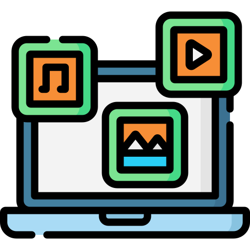
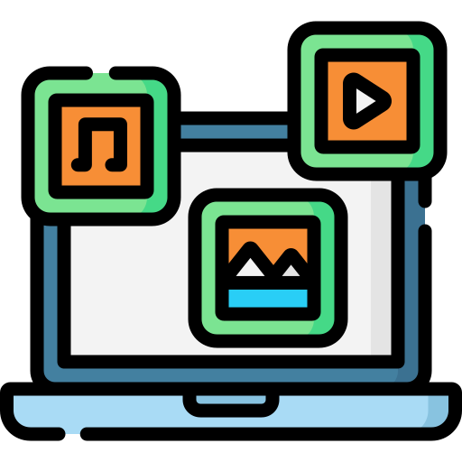

Diet Canva
Technologies: UPDATE BEFORE SUBMISSION
I am an aspiring junior front-end software engineer with open to finding a specialized niche. Throughout my journey to tech I find myself looking into ways to further explore user experiences in order to connect brand objectives.
Technologies: UPDATE BEFORE SUBMISSION
Technologies: HTML, CSS, JS, PHP, MySQL

Technologies: WE CAN ONLY ASPIRE

Technologies: SOUNDS FAMILIAR [WINK]

Technologies